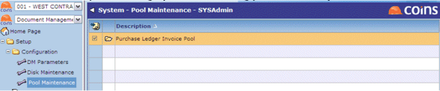
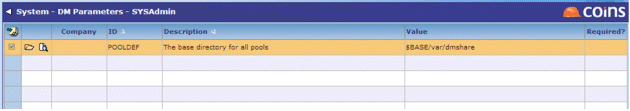

Pools
When you scan documents, places them in a pool until they are indexed. You must set up at least one pool, and may want to set up more than one, for example, to keep documents scanned by different departments separate.
Pool Maintenance
- Go to Pool Maintenance.
- Create a pool for OA CIM (scanning/ invoice indexing).

Configuration
Set the POOLDEF parameter and create the Unix directory - we recommend creating it under $BASE (for example, "dmshare" under $BASE/var/). Ensure the directory has full rwx permissions, for example: chmod 777 dmshare
